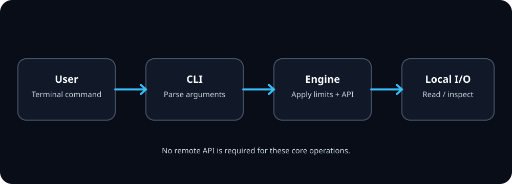

Filesystem
Inspection, comparison, bounded recursive search, copy, move, rename, directory creation and safe file/empty-directory removal.
RUST · LOCAL-FIRST · CLI
A modular local processing engine written in Rust. A reusable library and terminal interface for working with files, text, JSON and CSV without remote services.
Implementation Stages 1–6 are in place. Automated checks cover Linux, Windows, macOS and an Android ARM64 compile check. Physical Termux testing is still pending.
Public APIs may change before a stable 1.0 release. No APKs or prebuilt Android binaries are published.
Inspection, comparison, bounded recursive search, copy, move, rename, directory creation and safe file/empty-directory removal.
Streaming SHA-256 and duplicate detection. Files with unique sizes are discarded before hashing.
Byte, character, word and line counts; CRLF and CR newline normalization to LF.
Validation, pretty formatting and compact serialization.
Record validation, header inspection, formatting and exact-name column selection.
Structured --json output to integrate successful results with local scripts and tools.
The CLI is an adapter. Reusable logic stays in libraries.


pkg update && pkg upgrade
pkg install git rustrustc --version
cargo --version
git --versionRust 1.75 or newer is required.
git clone https://github.com/AmilcarGit/AmilcarCore-RS.git
cd AmilcarCore-RSsh scripts/install.shThe executable is installed at $HOME/.local/bin/amilcar.
echo 'export PATH="$HOME/.local/bin:$PATH"' >> ~/.bashrc
source ~/.bashrcamilcar --version
amilcar info
amilcar --helpFor Linux instructions and troubleshooting, read the complete installation guide.
amilcar file inspect ./document.txt
amilcar file diff ./original.txt ./copy.txt
amilcar file find ./documents --extension json
amilcar file copy ./source.txt ./copy.txt
amilcar file copy ./source.txt ./copy.txt --overwrite
amilcar file move ./copy.txt ./file.txt
amilcar file rename ./file.txt final.txt
amilcar file mkdir ./data/new
amilcar file remove ./file.txt
amilcar file rmdir ./data/new
amilcar file hash ./file.txt
amilcar file duplicates ./documentsamilcar text stats ./notes.txt
amilcar text normalize ./input.txt ./output.txt
amilcar json validate ./data.json
amilcar json format ./data.json ./formatted.json
amilcar json format ./data.json ./compact.json --compact
amilcar csv validate ./people.csv
amilcar csv inspect ./people.csv
amilcar csv format ./people.csv ./clean.csv
amilcar csv select ./people.csv ./selected.csv --columns name,ageamilcar --json info
amilcar --json text stats ./notes.txt
amilcar --json file inspect ./document.txtSuccessful results are printed as JSON. Errors go to stderr and use a non-zero exit code.
--overwrite.rmdir only removes empty directories; remove only accepts regular files.| Stage | Implementation |
|---|---|
| 1–2 | Workspace, base API and filesystem operations. |
| 3 | Text, JSON and CSV processing. |
| 4 | CLI command groups and JSON output. |
| 5 | 64 KiB buffers, size-first duplicate filtering and informational benchmarks. |
| 6 | CI, documentation, architecture guide and release checklist. |
| Pending | Real Termux device testing and stable 1.0 preparation. |
Contributor checks: cargo fmt --all -- --check, cargo check --workspace --all-targets, cargo test --workspace and cargo clippy --workspace --all-targets -- -D warnings. Run benchmarks with cargo bench --workspace.
Choose either MIT or Apache License 2.0.